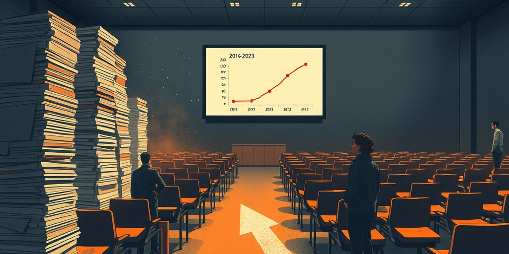
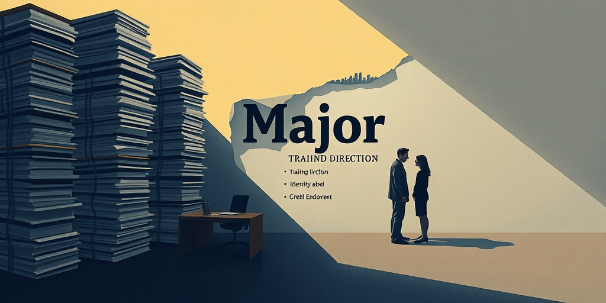

小汪老师的成长洞察 · 属于你的成长专栏
如果你的孩子现在三岁，等他上大学时，高考录取到哪个专业可能不再决定他拿什么毕业证。西南财经大学刚刚宣布，学生可以自由跨专业修课，修满学分就拿任意专业毕业证。这不是教育理想，是生存压力下的一次制度投降。
西南财大的具体安排是这样的：2026级学生从第三学期起可以跨专业选课，第四学期向学校预选毕业专业，第五学期正式确认。确认后，已修学分直接转换为新专业的选修学分。除中外合作办学、艺术类等少数类别，所有学生都可以自由选择会计学、统计学、计算机、金融科技、法学等绝大部分专业。
这意味着，一个高考被录取到冷门专业的学生，可以从大二起全程修会计学的课，最后拿到会计学的毕业证，学校完全认可。传统上“高考录取到XX专业=你的人生轨迹被锁定在XX领域”的链条，被这根政策一刀切断。
这不是孤例。更早的信号来自山西某高校，在软件工程火爆的年代一口气招了2000多名该专业学生，不是因为师资突然充足，而是因为这个专业好招生。当生源变成稀缺资源，专业设置就不再是学术规划，是生存策略。

人口结构的压力已经传导到大学门口。出生人口从2016年的1786万高点持续下降，到2023年只有902万。这意味着从2030年代开始，高等教育适龄人口将断崖式缩减。而过去二十年高校一直在扩招，校舍盖好了、教师编制定了、经费盘子铺开了，固定资产在那里，但学生没了。
这不是未来的预测，是正在发生的现实。一些专科和高职院校已经招不满，部分本科院校的报到率也在下降。西南财大作为211，目前未必招不满，但它看到了趋势。与其等学生用脚投票，不如先把选择权交出去，提前锁定生源。
当学生在两所差不多的学校之间做选择，“能不能让我读想读的专业”就变成了核心博弈点。西南财大这个政策，本质上是在提前应对这种博弈，等别的学校都推出类似政策就晚了，先出牌的人抢第一波红利的概率最大。

专业原本有三重含义：培养方向、身份标签、信用背书。西南财大的政策对这三层的影响各不相同。
培养方向这层，本来就有名无实。同一个专业出来的两个人，知识结构可能天差地别，取决于选了什么课、遇到了什么老师、自己课外学了多少。专业名和实际所学之间的差距，一直是个公开的秘密。自由选课制度只是把这种名实分离公开化了。
身份标签这层，被自由选择制度直接消解。高考录取到哪个专业不再具有任何终局意义，它只是一个入门位置。你在西南财大读四年，“学什么”和“拿到什么毕业证”之间的相关性，取决于你第三学期的选择，不取决于你高三那年的分数。学校为了生存，自愿放弃了对学生命运的“分配权”。
信用背书这层，是最危险也最值得玩味的。如果所有专业的毕业证都可以“选购”，那毕业证的社会信号功能会进一步稀释。但这对学校本身没有直接伤害，伤害的是整个高等教育系统的信用池。个体学校在理性利己的框架下，没有动机维护系统信用。这就是典型的公地悲剧：每个学校都在从“学历信用”这个公共品中提取短期利益，直到这个公共品被耗尽。
这种制度变化背后，是高校角色正在发生的根本性转换。过去的高校是“社会人力资本的分配器”，站在国家和社会之间，接受计划指令，分发人才标签。现在的高校正在变成“教育服务的零售商”，站在消费者面前，满足需求换取生存。
分配器的逻辑是命令-执行，零售商的逻辑是需求-供给。西南财大的这个政策，是一份写得非常漂亮的零售菜单。它告诉学生：你想拿哪个专业的毕业证，我们都可以提供，只要你来。
更深一层，这背后是整个专业制度的苏联模式遗产正在崩塌。中国大学的专业制度本质上是计划经济的产物，国家根据产业需求规划各专业招生名额。但市场早就不按这个逻辑走了。用人单位对专业的敏感度在下降，“学什么干什么”的对应关系在松动。当专业不再有信息价值，专业壁垒维护的成本就需要高校自己承担，而高校越来越承担不起。
写给你的话
当“专业”这个概念被高校自己主动消解，“学历”的社会信用还剩多少？这不是西南财大的问题，是所有高校一起制造的集体困境。你当年拼命考上的那个专业，可能在你孩子那代不再存在。到那个时候，高考分数的意义是什么？大学四年真正在交易什么？这些问题，现在还没有答案，但倒计时已经开始了。
小汪老师的成长洞察 · 属于你的成长专栏